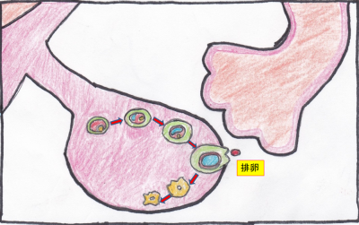
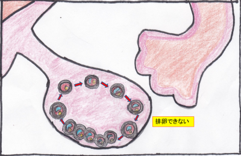

多嚢胞性卵巣症候群（PCOS）による不妊症でお困りの方はTeaching Beauty鍼灸マッサージ整骨院へ。
電話でのご予約・お問い合わせはTEL.03-6413-7803
〒154-0014 東京都世田谷区新町3-21-1さくらウェルガーデン３F
多嚢胞性卵巣症候群Polycystic Ovary Syndrome
多嚢胞性卵巣症候群（PCOS）とは
多嚢胞性卵巣症候群では、卵胞が卵巣の中に必要以上に沢山存在する状態を言います。卵胞とは、卵巣内にある卵子を包んでいる袋のようなものです。
本来、排卵が起こる際に一個の卵子が120日かけて成熟すると卵胞（殻）を破り、卵巣から出て行きます。
（わかりやすく言うと、いつも食べている鶏の卵の殻を破って黄身が出てくるようなイメージです。）
多嚢胞性卵巣症候群では、卵胞の発育が阻害されるため一定以上の大きさになることができません。
こうした成熟できない卵子（黄身）は卵胞（殻）を破れず、排卵されないまま卵巣にとどまってしまいます。
また、多嚢胞性の場合、卵胞（殻）が硬くなってしまうために卵子が卵巣の外に排出されにくくなります。
超音波検査では10個前後の小さな卵胞が連なって見えることがあります。
これが真珠のネックレスのように見えるため、これをネックレスサインと呼びます。
このようにして排卵できなかった卵胞が卵巣内にたくさん溜まってしまうので「多嚢胞性卵巣症候群」と呼ばれます。
【通常の排卵】

【多嚢胞性卵巣症候群】

近年では、睡眠や食生活などの生活習慣の乱れから、多嚢胞性卵巣症候群は増加傾向にあると言われいます。
日本では20～30人に1人とも言われています。 こんなに多いのかと思われるかもしれませんが、多嚢胞性卵巣症候群はウイルスやガンなどによる病気とは違い、いわば体質のようなものです。
とはいえ、医療機関できちんと検査してから鍼灸治療をしていくことがとても大切です。
多嚢胞性卵巣症候群は月経不順や無月経、不妊の原因ともなり、更に生活習慣病（肥満、糖尿病、高血圧、高脂血症など）のリスクを通常の方の何倍も高めてしまいます。
妊娠をご希望の方は、妊娠のためにもしっかり鍼灸施術を行い、元気な卵を排卵できるようになる事が妊娠への近道になります。
多嚢胞性卵巣症候群の症状と原因
症状には、月経不順や無月経などの月経異常、不妊、肥満、多毛（ヒゲが濃くなるなど）、男性化（声が太くなるなど）、左右両方の卵巣の腫れなど様々な症状がみられます。 【症状】
【症状】
①月経不順
月経周期が35日以上など不規則になります。
月経不順を訴える女性のおよそ70％が実は多嚢胞性卵巣だと言われています。
生殖年齢女性のうち3～5％にみられ、近年ではあまり珍しくなくなってきました。
②不妊
不妊の患者様の20～30％に、多嚢胞性卵巣症候群が見られると言われています。
つまり、不妊で悩む方の4～5人に1人が多嚢胞性卵巣症候群であるということが数値からわかります
③生活習慣病
多嚢胞性卵巣症候群の患者様は、肥満をはじめとした、糖尿病、高血圧、高脂血症などの生活習慣病にかかる頻度がかなり高くなります。
高血圧の場合は40歳代以降に急速にリスクが高くなります。
上記のような症状は、主に女性ホルモンの分泌バランスの乱れによる減少と男性ホルモン（プロゲステロン）分泌過多などのホルモン異常によって起こります。
その背景にはインスリン抵抗性などの糖代謝の異常もあります。
通常、排卵には脳から分泌される「黄体ホルモン」と「卵胞刺激ホルモン」という2つのいわゆる女性ホルモンが関わっています。
多嚢胞性卵巣症候群ではこのバランスが崩れてしまうことで、排卵がうまく行われなくなってしまうのです。
また、血糖値を下げるホルモンであるインスリンも多嚢胞性卵巣症候群に関連しています。
インスリンが効きにくくなる状態のことをインスリン抵抗性といいます。
そのような状態になると、それを補うためにインスリンが多量に分泌され、この状態を高インスリン血症といいます。
その結果、卵巣で男性ホルモンが増加してしまいます。
男性ホルモンは卵胞の発育を抑制し、卵巣の外側の膜(白膜)を厚く硬くすることによって排卵を妨げます。
男性ホルモンが増加してくる症状として、にきびや多毛が出現することもあります。
西洋医学による一般的な治療
【排卵誘発剤（飲み薬）】排卵誘発剤のクロミフェン（クロミッド）を内服する。
【排卵誘発剤（注射）】
クロミフェンが効かない場合には、ホルモン剤の注射薬を使ったゴナドトロピン（性腺刺激ホルモン）療法を行います。
※副作用
卵巣過剰刺激症候群（OHSS）
薬での排卵誘発を行った時に、卵巣過剰刺激症候群（OHSS）と呼ばれる副作用をおこす傾向があります。
多嚢胞性卵巣症候群では卵巣に沢山の卵胞が溜まっているため、排卵誘発剤を使うと一度にすべての卵胞が大きくなってしまうことがあります。
それを排卵しようとすると、卵巣が大きく腫れ上がりお腹や胸に水が溜まってしまうことがあるので、卵巣過剰刺激症候群には注意が必要です。
酷い場合は呼吸障害や腎機能障害を起こしてします恐い病気なのです。
また、薬を多く使ってしまうと女性ホルモンの量が多くなるため、子宮がんや乳がんのリスクを高めてしまいます。
子供が出来たけど、ガンになってしまったでは本末転倒です。
【手術】
注射を多く使わないと排卵できないような重症の排卵障害の場合や、副作用である卵巣過剰刺激症候群（OHSS）が起こる場合には、手術が行われることもあります。
腹腔鏡下手術で、左右の卵巣の表面に小さな穴を沢山あけ、増えすぎた未熟な卵胞を減らすことで、排卵しやすくするという方法です。
この方法を腹腔鏡下卵巣多孔術（LOD）、または卵巣ドリリング法と呼びます。
腹腔鏡下卵巣多孔術（LOD）を行うと自然に排卵しやすくなり、飲み薬のクロミフェンに対する反応性がよくなったりします。
しかし、お腹を開ける大手術をしても腹腔鏡下卵巣多孔術（LOD）の効果が続くのは半年～１年ほどしかないのです。
その間に妊娠をするようにしなければなりません。
不妊の病院に通って赤ちゃんができるまでの期間が平均で2年半と言われているので、手術をしても妊娠できない人が多いということになります。
【不妊の場合、体外受精】
妊娠を希望する場合は、卵巣の腫れが落ち着いてから、受精卵を1〜2個子宮内に移植する体外受精を行うことで、安全に治療することができます。
【糖代謝異常への治療】
糖尿病の薬で血糖を下げてインスリンの過剰な分泌を抑えます。
これにより卵巣で男性ホルモンも抑えられ、卵巣内のホルモン環境が改善され、排卵しやすくなります。
東洋医学による治療
【① 月経不順の改善】月経不順になる方のほとんどが冷えや全身の血行が滞っていることが多いように感じます。
鍼灸治療を行い冷えと血行を良くすることにより多嚢胞性の卵胞の数が減り、薬や手術でなく自然に卵胞の数が少なくなり妊娠へと導くことができるのです。
【② 不妊治療】
当院でよく患者様にお話しているのですが、いかに『原始人の状態に体を持っていくか』が重要になりますとお話しています。
つまり、原始人の頃というのは、その時期に摂れた食べ物を食べ（季節の食べ物を食べる）、運動量が多くなります。
また、冷たい物を控え、日が落ちたら寝て、日が昇ったら起きてと生活リズムが整う生活をしています。
不妊治療もいかに生活リズムを整え自律神経を調節し、鍼灸で全身の血行を上げ、冷えを取り除くことがとても重要になってきます。
また、東洋医学、特に鍼灸施術では、硬くなって排出機能の落ちた卵巣と、体内のホルモン機能を改善するアプローチを行っていきます。
月経不順を改善するツボと、生殖器に作用するツボに加え、全身調整に有効なツボへの施術を用いた、多嚢胞性卵巣に対する鍼灸治療の有効性が、臨床研究によっても認められています。
（参照：日東医誌Kampo Med Vol.64 2013）
【③ 生活習慣病の予防】
多嚢胞性卵巣症候群の患者様は糖尿病や高血圧に罹るリスクが普通の人の何倍も高くなるため、妊娠してからも生活習慣に気を付ける必要があります。
妊娠した後の人生を考えると最低でも40年間はこの、多嚢胞性卵巣症候群からくる生活習慣病と戦う必要があります。
しかし、不妊治療中の鍼灸治療によってある程度、生活リズム、ホルモンバランスが整えることができます。
つまり、不妊治療中に行っていた鍼灸施術によりその後の人生の中で生活習慣病に注意しなくても大丈夫な状態に持っていくことができます。
それは鍼灸治療によって体質を変えることができるからなのです。
そこが鍼灸の強みなのです。
病院で行う治療は体には良いことはしません。薬なり手術をするからです。
しかし、鍼灸は体の状態を良くして、健康な状態に身体全体を持っていくからこそ妊娠できるのです。つまり、鍼灸は全身の免疫も自律神経もすべて健康な状態だから子供ができると考えます。
しかし、病院では体に鞭を打って、無理やり妊娠されるとの表現が近いように感じます。
多嚢胞性卵巣症候群の患者様は月経不順や赤ちゃんを産んだら、多嚢胞性卵巣をほったらかす患者様が多いのが現状です。
しかし、出産してからも生活習慣病になるリスクは依然高いままです。
その予防と全身調整のために、定期的に鍼灸施術を受け、全身の血行や細胞を元気にしておく必要があります。
また、ご自身でもお家でツボ刺激や食事の際の血糖の管理など、セルフケアを続けられる事をおススメします。
それと並行して、糖尿病や高血圧の予防と早期発見のためにも、定期的に病院にてメタボリックシンドロームの検査を受ける事もおススメしております。
多嚢胞性卵巣症候群の鍼灸での施術期間について
多嚢胞性卵巣症候群は西洋医学の治療の場合は妊娠できても薬を飲み続け、生活習慣病のため死ぬまで病院とお付き合いしなくてはならない病気なのです。
当院の場合、多くは半年間、長くても2年間で多くの患者様が多嚢胞性卵巣症候群の症状やホルモンバランスが整う方が多いです。
妊娠ができるレベルまでになるのには、週1回で通常1年の治療時間を必要とします。
また、早い方だと半年で妊娠する方もいます。
多嚢胞性卵巣症候群だけを治したい場合は半年間の鍼灸施術でよくなる方がほとんどです。
多嚢胞性卵巣症候群は早い段階から治療をすることがとても大切になります。
体質を変えて今後の人生をより良いものにしていきましょう。
施術にかかる時間
症状により異なりますが、施術時間は下記を目安として下さい。
初診時 60～90分程度
※初診は問診表の記入や初回検査、しっかり丁寧な問診を行いますので多めにかかります。
2回目以降 60分程度
場合により上記の目安時間より長くかかることもありますので、お時間には余裕を持って
ご予約下さい。
服装
鍼灸施術を行う際は当院で患者着をご用意しております。
そのため、どのような恰好でいらしていただいても問題ありません。
個室治療のため、 着替えのスペースもございます。
施術料金
| １回 | \45,000(税別) |
|---|---|
▶無料相談はこちら
Ｔｅａｃｈｉｎｇ Ｂｅａｕｔｙ

〒154-0014
東京都世田谷区新町3-21-1
さくらウェルガーデン3F
TEL：
03-6413-7803
→アクセス
診療時間
【通常診療】
月火金土
午前：09:00～13:00
午後：15:00～19:00
木曜日
午前：休診
午後：15:00～19:00
※当日予約可
休診日
水、木(午前)、日、祭日
夜間診療
月火木金土／19:00～21:00
※通常価格の1.5倍料金
※当日の19時までにご予約の場合のみ
※往診の場合も19時までにご予約下さい
早朝診療
月火木金土／07:00～09:00
※通常価格の2倍料金
※前日の19時までにご予約の場合のみ
交通事故・労災・
各種保険取扱い